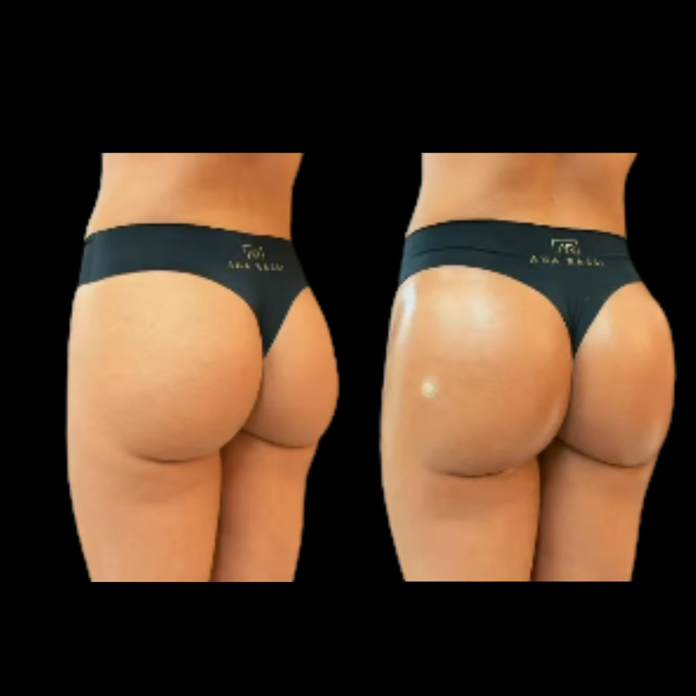

Indicado para queixas como afundamento da lateral do glúteo (a chamada "fossa trocantérica") e para quem busca mais equilíbrio de volume na região.
Quero conhecer o Bumbum Up Ver vídeo explicativo Agendar avaliaçãoProtocolo para tratamento da região Glútea.
Indicado para queixas como afundamento da lateral do glúteo (a chamada "fossa trocantérica") e para quem busca mais projeção na região.
Preenchimento com ácido hialurônico e bioestimuladores de colágeno para equilibrar o volume entre as regiões do quadril e glúteo, de forma personalizada para a anatomia de cada paciente.
Cada protocolo é conduzido com atenção técnica e cuidado individual, do início ao fim do atendimento — sempre priorizando a segurança e o conforto de cada paciente.
Formada pela Universidade Federal de Goiás (UFG), com Residência Médica em Otorrinolaringologia, a Dra. Letícia Ávila construiu sua trajetória entre a medicina hospitalar e a estética. Desde 2016, atua na Secretaria de Saúde do Distrito Federal, com experiência direta no atendimento de intercorrências, urgências e emergências. É especialista em Dermatologia Estética e professora na Pós-Graduação do IPM Pós.
"Muito atenciosa e talentosa no seu trabalho... Vou voltar sempre!"— Paciente
"Obrigada, Dra., por cuidar tão bem de mim!"— Paciente
"Mais do que uma excelente médica, é uma pessoa humana, sensível e verdadeiramente comprometida em ajudar."— Paciente
Preencha o formulário ao lado ou entre em contato diretamente — nossa equipe retorna para agendar sua avaliação individual sobre o Bumbum Up.